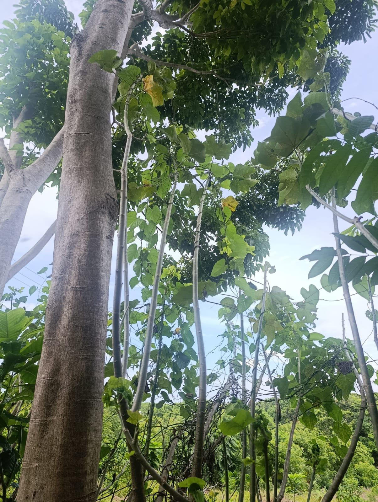
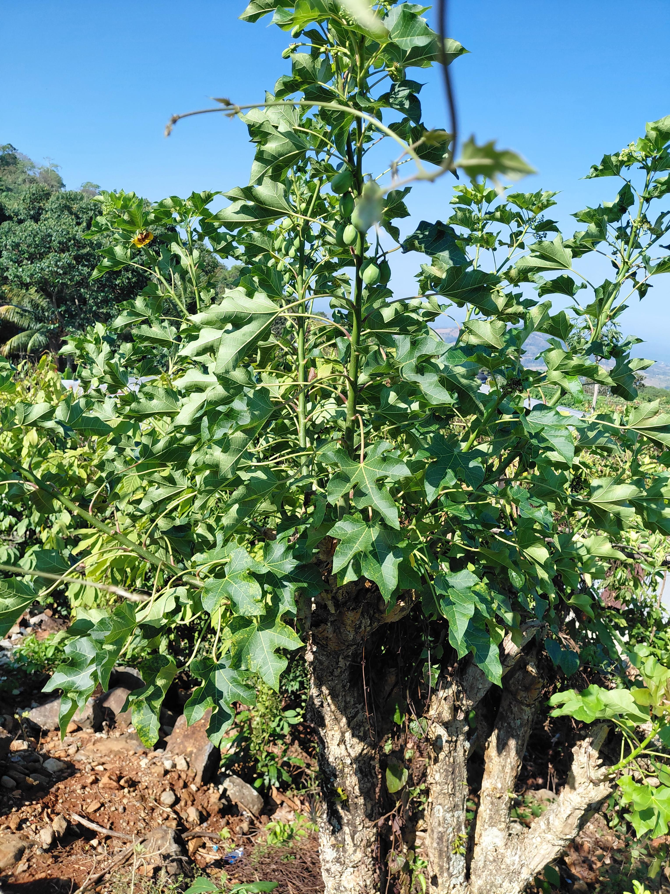
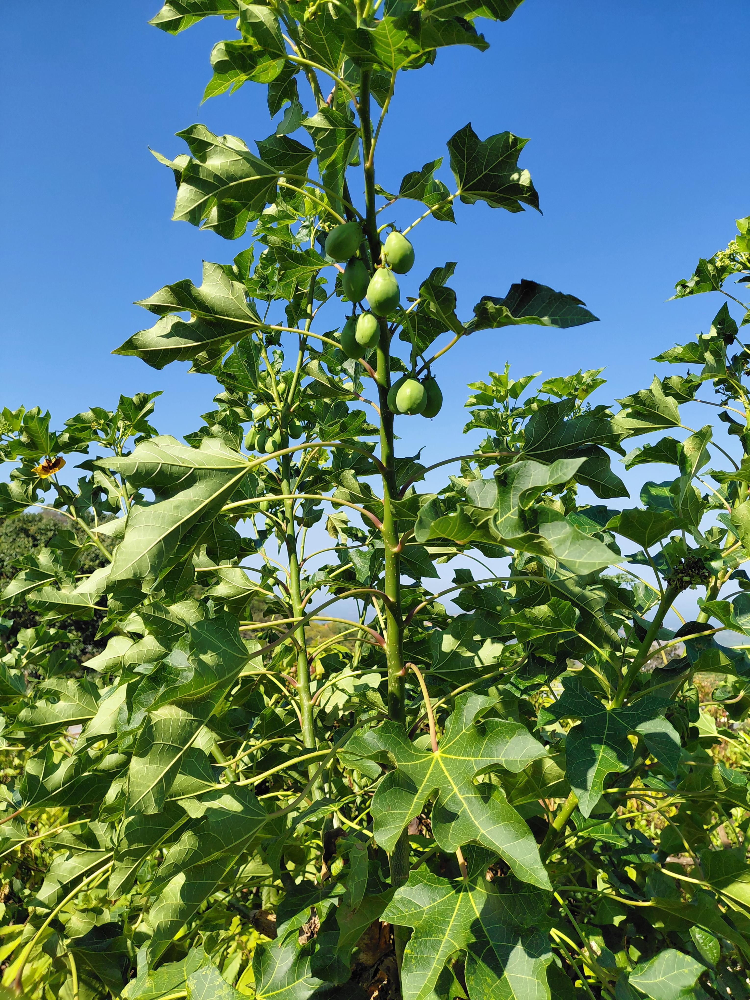

Piñon

Galería del Piñon
📸 Galería del Piñon



Nombre científico
Jatropha curcas.
Familia
Euphorbiaceae.
Descripción
El Piñon es un arbusto o árbol pequeño de tallo ramificado que puede alcanzar varios metros de altura. Sus hojas son simples, grandes y de color verde, con forma acorazonada y varios lóbulos, margen ligeramente ondulado y pecíolo largo.
Usos
El piñón se utiliza principalmente para obtener aceite de sus semillas, que puede aprovecharse para producir biodiésel y otros productos. También se usa como planta ornamental y, en algunas comunidades, forma parte de prácticas de medicina tradicional. Sus semillas no deben consumirse, ya que pueden ser tóxicas.
📍 Lugar donde fue encontrada
Municipio de Huehuetan, Chiapas.